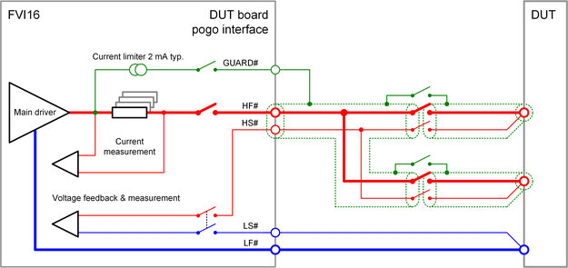
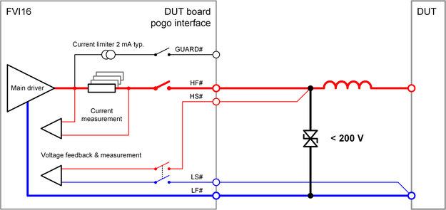

FVI16 output pogo pins
The FVI16 output pogo pins connect the force and sense lines of the floating channels to the DUT. Some specific electrical design rules must be considered for the output pin to ensure that the FVI16 specifications are met.
HF# and LF#
Three pogo pins for the high force output and three pogo pins for corresponding return pin connect HF# and LF# to the DUT board. The following rules must be respected for these pins.
- LF# is the floating ground of an FVI16 channel and needs therefore always a low impedance connection to a defined potential. The defined potential can be any resource like another pin, the DUT or the DUT board ground that is able to set the desired voltage taking into account the channel's parasitic capacitance to system ground.
- The card is able to compensate a voltage drop of maximum 7.0 V per line from the pogo pins to the force-sense connection at the DUT. The resistance of the connections in between must be low enough to fit to this requirement: The maximum supported resistance for a 10 A pulse will be 700 mΩ.
- The force lines "HF#" and "LF#" are wired to three pogo pins. These three pogo pins must be connected in parallel on the DUT board to ensure that the specification for the card and the maximum ratings for the pogo pins can be met.
- A low inductive layout must be selected. HF# and LF# should be routed in parallel to the DUT to minimize the area between the two lines.
HS# and LS#
| Pin | Parameter | Value | Note |
|---|---|---|---|
| HS# | Maximum voltage difference to HF# | ± 7 V | These limits apply to all operating modes including high impedance (HIZ) voltage measurements in high-power mode and in high-voltage mode. |
| LS# | Maximum voltage difference to LF# | ± 7 V |
GUARD#
The GUARD# pogo pin carries the same voltage as the HF# and HS# pogo pins. The pin is used to guard these two lines and to minimize the parasitic leakage current from the two lines to DUT board ground or to other lines. The line connected to this pin should shield or surround the HF# and HS# line from the pogo pins to the DUT as shown in the diagram below.
The GUARD# output features an internal current limiter. The typical maximum current is 2 mA.

Application note
- FVI16 output pins with significant high inductive load require high-voltage protection
- FVI16 output pins must be protected by transient voltage suppressor devices
on the DUT board if they are connected to significant high inductive loads.

The FVI16 provides several protection features like the maximum voltage drop on the force lines, the detection of exceeded power budget or of consumed energy budget. These protection features may cause a channel to be disconnected at run-time while high currents are driven. High inductive loads on the DUT board may cause high voltage spikes in this case. These high voltage spikes can exceed the Compliance range and therefore must be clamped to a safe level:- A transient voltage suppressor must be connected between the HF# pin and the LF# pin of the FVI16 channel that is to be protected.
- High transient currents through the transient voltage suppressor and the voltage drop on the DUT board traces will increase the maximum voltage at the HF# pin: The nominal voltage of the device must be selected so that the compliance range of the HF# pin is never exceeded.
- We recommend selecting a suppressor device with the lowest nominal voltage that matches to the needs of the testflow and has a sufficiently low leakage current.
- For suppressor devices with a nominal voltage lower than the maximum voltage of the protected channel, we recommend performing a functional test of the devices as part of a DUT board test.
Functional changes
- Introduced in SmarTest 7.5.0